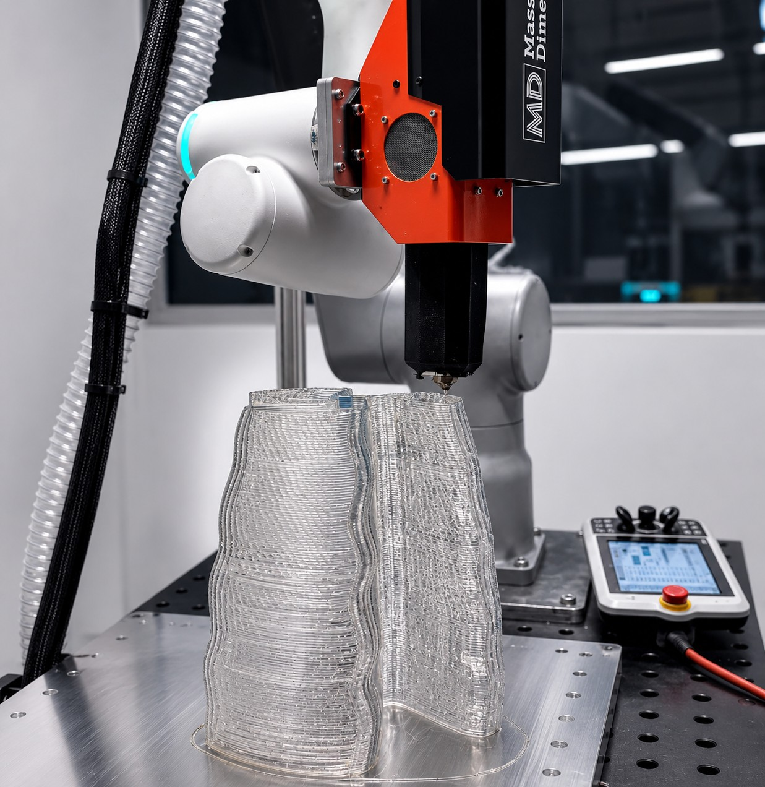

Map the possibilities.
Explore how AI could support, disrupt, or extend robotic 3D printing and what should remain under human control.

Exploring Human–AI Interaction in Emerging Robotic Fabrication Contexts
Half day · Hands-on making
Robotic fabrication research · Image source: Griffith University & Anthony Franzè
About the workshop
How might AI support human decision-making as robotic 3D printing processes unfold?
Robotic 3D printing may appear precise and automated, yet deposited material can sag, shift, accumulate, or behave unexpectedly as an artefact takes shape. These moments call for situated judgement: whether to pause, correct, adapt, continue, or preserve an unexpected outcome.
In this half-day workshop, we explore human–AI interaction through hands-on making, speculative role-play, optional LLM consultation, and a low-fidelity robotic 3D-printing enactment. We will consider when AI assistance is useful, generative, unnecessary, or best avoided and how people might question, redirect, reject, or build upon its proposals.Together, we will develop a vocabulary of interaction patterns and communication needs to inform future AI-assisted fabrication interfaces and workflows
We use making and role-play as design probes. The workshop does not test a functioning AI or robotic system.
Explore how AI could support, disrupt, or extend robotic 3D printing and what should remain under human control.
Build with irregular materials and 3D pens, first through human collaboration, then with speculative AI assistance.
Introduce constrained movement and deposition rules to explore intervention in a robotic 3D printing scenario.
Reflect together and develop a preliminary vocabulary of interaction patterns and communication needs.
Programme
Provisional programme
09:00–12:30 · Timing to be confirmed
| Time | Activity |
|---|---|
| 09:00 | Welcome & opening provocationAcknowledgement of Country, workshop aims, materials, roles and methods. |
| 09:20 | Mapping AI in fabrication contextsMind-map possible AI roles, moments of involvement and concerns about control and agency. |
| 09:40 | Speculative making with AI assistanceCollaborative making, followed by maker-requested or pre-emptive AI assistance. |
| 10:30 | Morning tea |
| 10:45 | Low-fidelity robotic 3D-printing enactmentConstrained deposition, changing material conditions, speculative AI responses and optional LLM consultation. |
| 11:45 | Interaction mapping & group synthesisCompare experiences and identify recurring interaction patterns and communication needs. |
| 12:20 | Closing reflectionConsolidate the vocabulary and discuss next steps. |
| 12:30 | Workshop concludes |
Who can take part
For researchers, designers, makers and practitioners curious about human–AI interaction.
We welcome perspectives from HCI, design, creative practice, architecture, robotics, social science and related fields. Approximately 12–16 participants will work in groups of three or four, supported by facilitators.
No prior experience with robotic 3D printing or AI systems is required. Participants will explore roles including Maker, Material Handler, Robotic Printer Enactor and AI Agent.
Contribute through making, observing or reflecting. Materials and devices are provided, and LLM use is optional: no personal device or account is required. To discuss participation or accessibility needs, contact Anthony.
Organisers
Queensland College of Art and Design, Griffith University & QUT
Product and user experience design; design-led research exploring AI, robotics, XR and human–robot collaboration.
Queensland University of Technology
Human-centred design, augmented reality and cyber-physical systems for participatory design and making.
QUT · Australian Cobotics Centre
Human factors and the embodied, social and spatial coordination of human–robot collaboration.
Queensland University of Technology
Design robotics, computational design, and architectural and robotic fabrication at CARL.
Queensland University of Technology
Human-centred and socio-technical approaches to architectural robotics, design, construction and HCI.
QUT · Australian Cobotics Centre
Immersive, spatial and interactive technologies for the design of human–robot collaboration.
Queensland College of Art and Design, Griffith University
Product and user experience design, additive manufacturing, sustainable materiality and reflective making.
Join the conversation
Submit an expression of interest of approximately 250–300 words outlining your research or practice and responding to the prompts in the application form.
Optional: after completing the form, email a sketch, image, diagram or example to a.franze@griffith.edu.au, illustrating a material situation or interaction challenge you would like to explore.
Apply via Microsoft FormsQuestions? Email Anthony Franzè.